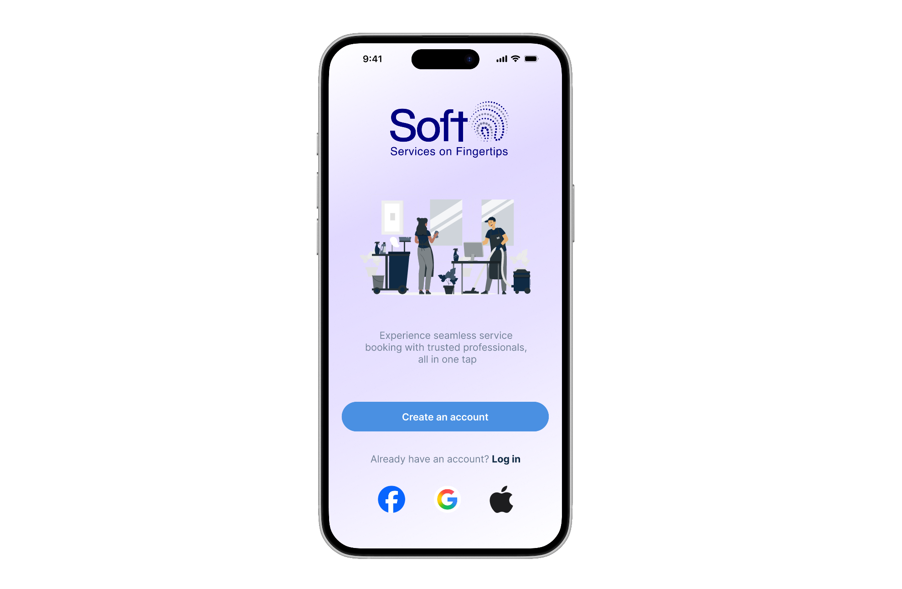

SOFT - Cleaning Services App
View Figma ↗A premium, minimalist mobile platform connecting users with trusted cleaning service providers. Designed for busy homeowners, it features a clean blue-and-white aesthetic to evoke trust and reliability. The flow ensures quick and seamless bookings, including screens for login, home, service categories, bookings, and profile management.
Completed: June 13, 2026